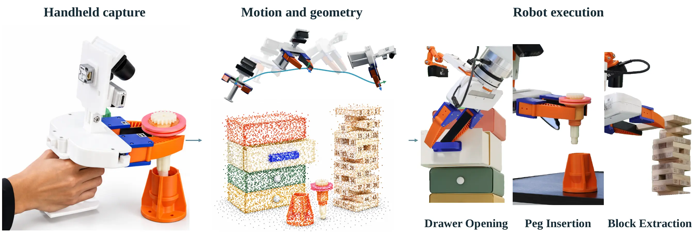
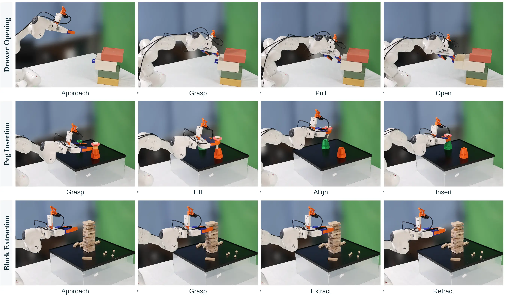
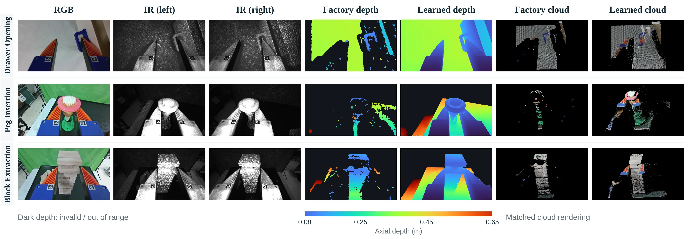

DepthUMI
Active Depth for Universal Manipulation Interfaces
A wrist-contained handheld interface that uses the same learned active-depth source to recover demonstration motion and provide local 3D observations for robot learning.

The system
One sensing source, two roles.
Portable demonstrations need reliable wrist motion and useful geometry near the gripper. DepthUMI combines wide-field stereo, inertial sensing, and learned active depth in one calibrated assembly.
Capture
Record handheld demonstrations with synchronized wide-field, inertial, and near-field active-sensing streams.
Recover motion
Use visual–inertial constraints and depth to estimate the trajectory, then transfer calibrated camera motion to gripper actions.
Learn and execute
Use the same learned depth source to construct metric point-cloud policy observations for a robot arm.
Motion and supervision
Track globally. Act locally.
We evaluate motion against an external Vive reference and measure error over the relative action horizons used in policy supervision. The latter captures local error that a global trajectory score can miss.
Wrist motion recovery
Mean translation ATE on seven real recordings; lower is better.
| Motion source | ATE (mm) |
|---|---|
| ORB-SLAM3 stereo–inertial | 3.117 |
| Fisheye depth | 2.873 |
| Learned IR depth | 2.875 |
Fisheye and learned-IR means differ by 0.002 mm, which is not meaningful at this precision.
Action-horizon error
Relative translation RMSE on 24 common demonstrations; lower is better.
| Horizon | ORB-SLAM3 | Learned IR |
|---|---|---|
| 1 step | 2.83 | 1.51 |
| 3 steps | 4.34 | 2.91 |
| 6 steps | 6.17 | 4.53 |
| 16 steps | 9.30 | 7.27 |
Values are in mm. This is tracking-derived supervision error, not policy train/test prediction error.
Closed-loop execution
Geometry matters as clearance narrows.
Three Franka Research 3 tasks move from coarse drawer pulling to peg insertion and constrained block extraction. All policies share demonstrations and action supervision; the DP3 variants change the geometry source.
| Policy observation | Drawer opening | Peg insertion | Block extraction | Total |
|---|---|---|---|---|
| RGB | 7/10 | 1/10 | 1/10 | 9/30 |
| Factory depth | 5/10 | 0/10 | 1/10 | 6/30 |
| Learned active depth | 8/10 | 7/10 | 5/10 | 20/30 |
Successes / attempts. Drawer changes by one success over RGB; the larger observed gains occur on the precision-sensitive tasks.
From execution to sensing
Scenes from the real system.
Third-person task stages show what the robot does. Synchronized wrist views show the RGB, IR, factory depth, learned depth, and point-cloud inputs available at deployment.
Three task executions

Wrist-view geometry

Reference
Citation
This is an anonymous submission. Author information will be added after review.
@misc{depthumi2027,
title = {DepthUMI: Active Depth for Universal Manipulation Interfaces},
author = {Anonymous},
year = {2027}
}